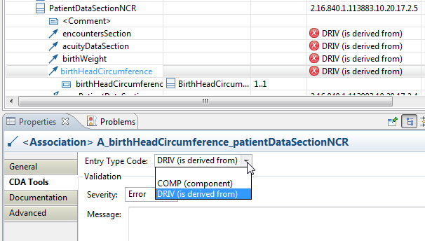

Add a
typeCode constraint for the relationship connecting two template
classes.
-
Select the table row for an association.
-
In the Properties view CDA Tools tab, the
Entry Type Code field will be visible if this
tooling supports
typeCode constraint for the source/target association you
have selected. Select the desired type code from the pull-down list.
This example adds an
association from PatientDataSectionNCR to BirthHeadCircumference, with
multiplicity 1..1 and
typeCode
DRIV.
